Lab 10: Localization using Bayes Filter (Simulation)
Pre-lab Setup
I followed the simulator setup instructions, activating my virtual environment and installing all required dependencies:
python -m pip install numpy pygame pyqt6 pyqtgraph pyyaml ipywidgets colorama
Running python -m tkinter in the terminal produces a GUI pop-up. Clicking
the "Click me" button appends an additional bracket layer — confirming that tkinter is
configured correctly.
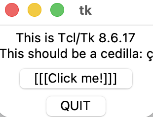
I then installed Box2D via pip (pip install Box2D) and verified the
installation by running import Box2D; print(Box2D.__version__) in the
Python interpreter, which outputs 2.3.10.
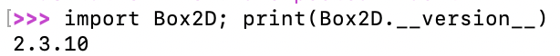
After downloading and extracting the simulation base code, the virtual robot and
plotter are accessible via inClassDemo.ipynb.
Task 1 — Open Loop Control
The goal of Task 1 is to command the robot through a square loop using only pre-set velocity commands, with no sensor feedback.
In-Class Attempt
My initial attempt had a cmdr.reset_sim() inside the while loop,
causing the robot to teleport back to the origin every iteration instead of
completing the square. The code also used time.sleep() (which blocks
the async event loop) and an angular velocity of 3.1 rad/s rather than
math.pi, producing an 88.8° turn instead of the intended 90°.
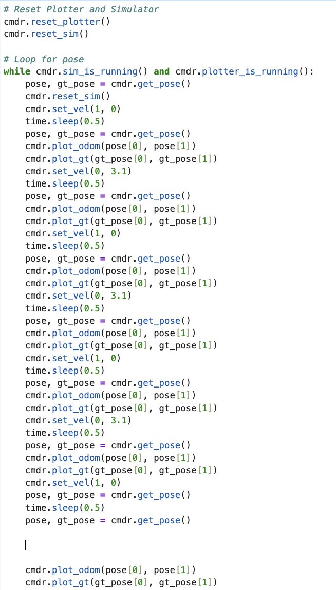
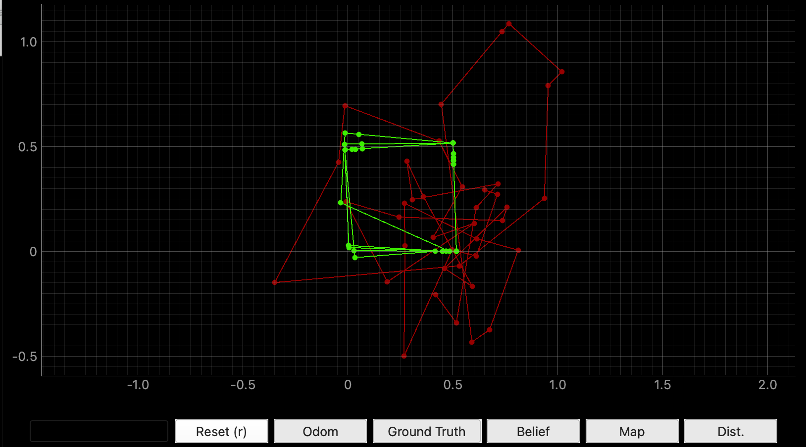
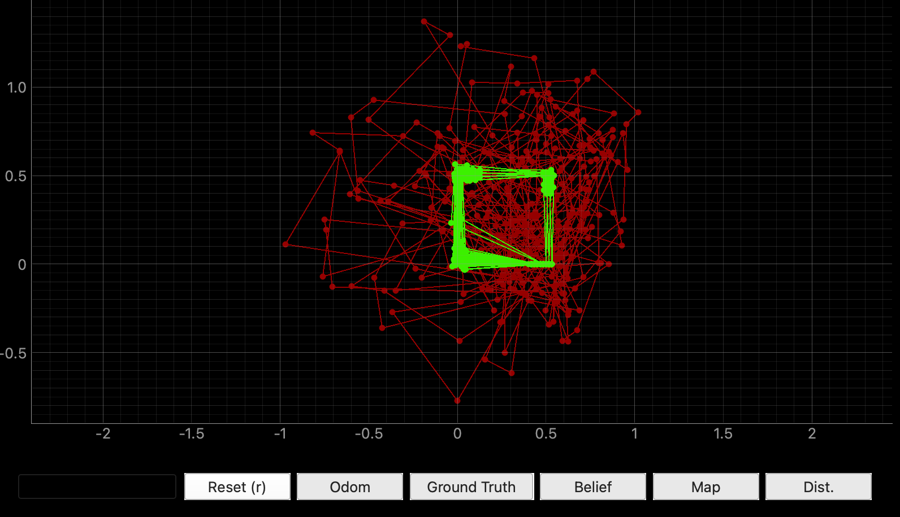
Revised Attempt
Three fixes were applied after class:
- Removed
cmdr.reset_sim()from inside the loop. - Replaced
time.sleep()withawait asyncio.sleep()to avoid blocking the async event loop. - Changed angular velocity to
math.pifor an exact 90° turn (π × 0.5 s = 1.5708 rad).
A break was also added to stop after one square so the odometry cloud
stays clean.
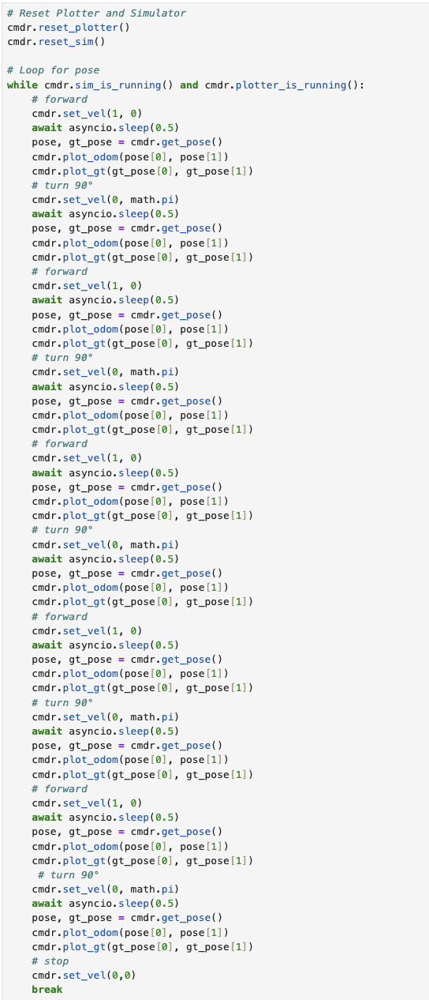
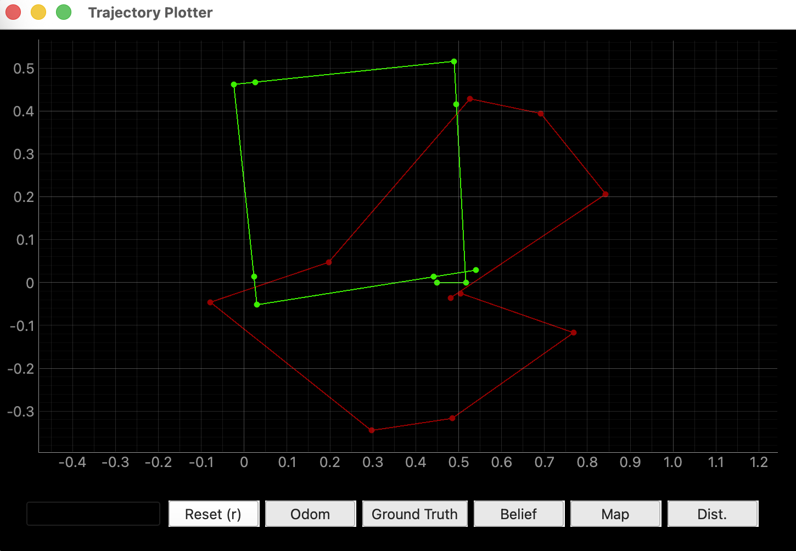
Video 1. Virtual robot executing the open-loop square trajectory.
What is the duration of a velocity command?
Each velocity command lasts 0.5 seconds, controlled by
await asyncio.sleep(0.5). set_vel() sets the velocity
immediately and returns; the sleep duration determines how long the robot actually
moves at that velocity before the next command is issued.
Does the robot always execute the exact same shape?
No. I re-ran the simulator twice and observed different results both times:
- Run 1: Green square starts near (−0.3, 0); robot ends pointing roughly upward.
- Run 2: Green square starts near (−0.2, 0); sensor line is visibly more slanted at the end.
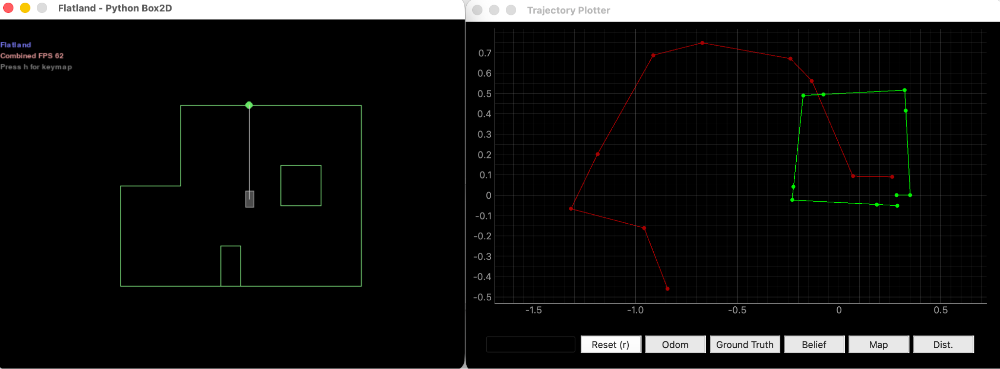
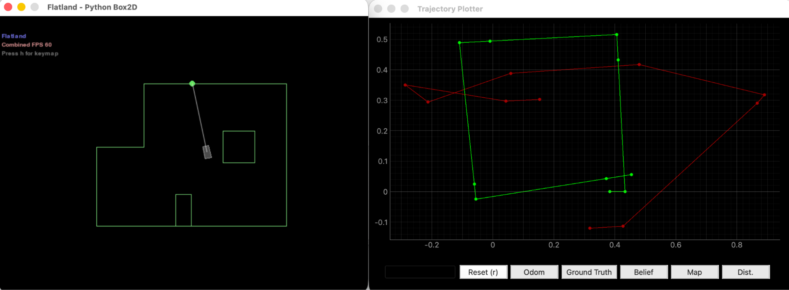
The odometry (red) varies dramatically due to accumulated sensor noise, producing a
different distorted polygon every time. But even the ground truth (green) is not
perfectly reproducible — reset_sim() introduces small pose variations on
each reset. Since open-loop control issues the same velocity commands regardless of
actual state, any initial or mid-trajectory deviation propagates forward
uncorrected.
Task 2 — Closed Loop Control
The goal of Task 2 is to implement a simple closed-loop obstacle avoidance controller using the front-facing ToF sensor.
In-Class Attempt
The in-class version commanded a fixed 180° turn every time the sensor read below 0.70 m, always in the same direction. This caused the robot to get trapped bouncing back and forth in a straight line.
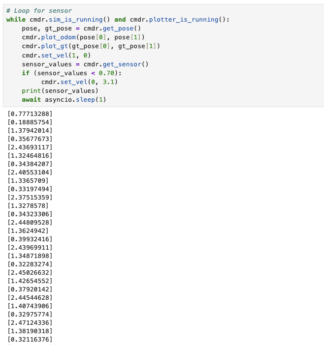
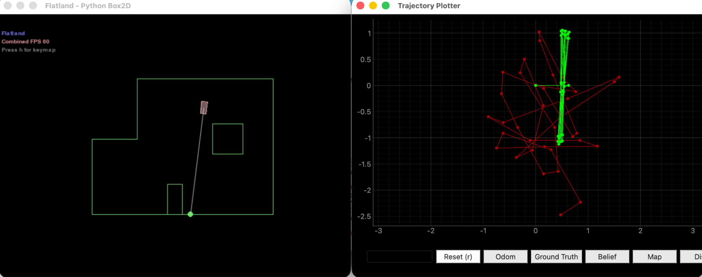
Revised Attempt
I imported the random library and added a random turn direction to
prevent the robot getting trapped in corners. The robot reads the sensor and reacts:
the sensor value feeds back into the turn decision, making this a
closed-loop controller with respect to obstacle avoidance (though not
with respect to pose estimation).
# Loop for sensor
while cmdr.sim_is_running() and cmdr.plotter_is_running():
pose, gt_pose = cmdr.get_pose()
cmdr.plot_odom(pose[0], pose[1])
cmdr.plot_gt(gt_pose[0], gt_pose[1])
sensor_values = cmdr.get_sensor()
print(sensor_values)
distance = sensor_values[0]
if (distance < 0.5):
# stop then turn
cmdr.set_vel(0, random.choice([-1, 1]) * math.pi * 2)
# longer sleep to ensure turn completes before re-checking sensor
await asyncio.sleep(0.6)
else:
# move forward
cmdr.set_vel(1.0, 0)
# short sleep so robot re-checks sensor frequently while moving
await asyncio.sleep(0.1)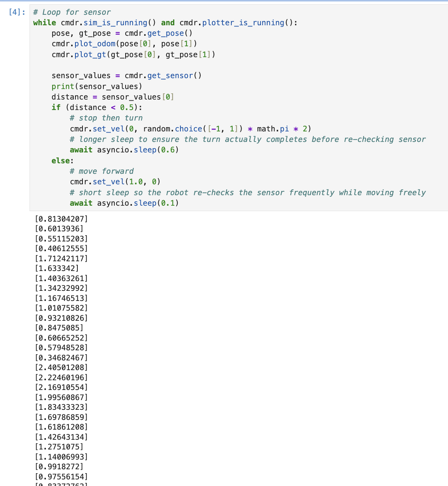
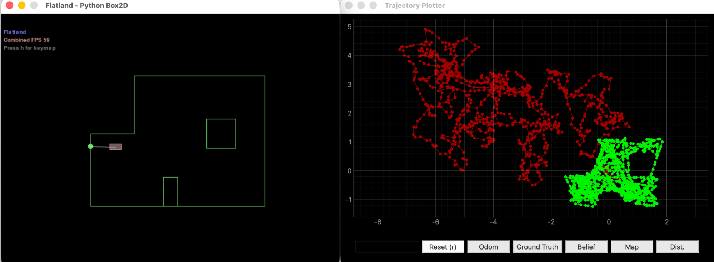
Video 2. Virtual robot performing closed-loop obstacle avoidance.
By how much should the virtual robot turn when close to an obstacle?
When the sensor reads below 0.5 m, the robot turns at 2π rad/s for 0.6 seconds,
rotating roughly 360° × 0.6 ≈ 216°. The
random.choice([-1, 1]) prevents the robot from repeatedly spinning
into the same corner.
At what linear speed should the virtual robot move? Can it go faster?
The robot moves at 1.0 m/s in the clear-path branch. The
else branch re-checks the sensor every 0.1 s, so the robot travels
only ~0.1 m per loop iteration before re-evaluating — giving ample reaction time.
Speed could be increased by reducing the sleep duration further, so the robot
re-evaluates more frequently.
How close can the virtual robot get to an obstacle without colliding?
The trigger threshold is 0.5 m. During the 0.1 s of free travel at 1.0 m/s, the robot travels an additional ~0.1 m, so real proximity at the moment of response is approximately 0.4 m.
Does the obstacle avoidance code always work?
Not always. If the robot is mid-turn and the sensor briefly reads a clear path, the controller snaps back to 1.0 m/s before the turn is complete. At concave corners, the robot may also turn toward a wall that was previously behind it. Increasing the threshold from 0.5 m to ~0.7 m would give more buffer in tight spaces.
Bayes Filter Implementation
In the pre-lab, the closed-loop controller corrected the robot's heading based on real-time sensor input, but did not use that information to fix the pose estimate. In this section, I implement grid localization using a Bayes filter to mitigate odometry drift and produce a belief (blue) that closely tracks the ground truth (green).
After starting the simulator and plotter, I initialized the robot, mapper, and
BaseLocalization object, then called cmdr.plot_map()
to render the world geometry from world.yaml.
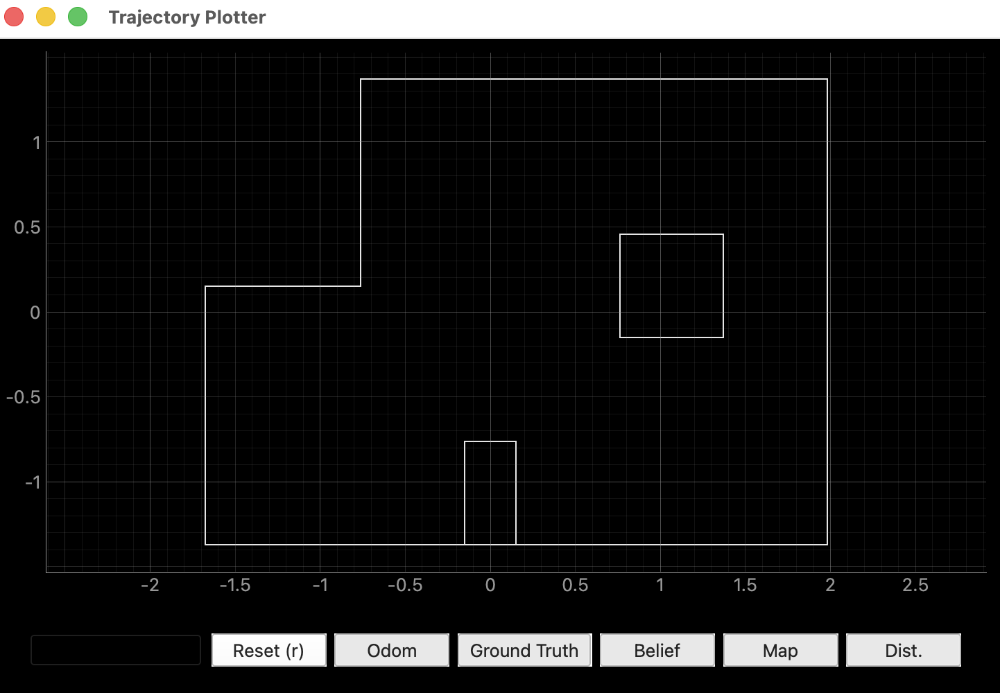
0.00051440329218107 (= 1 / 1944).
compute_control
Extracts the odometry motion model parameters [δrot1, δtrans, δrot2] from two consecutive poses. Any motion between two states can be decomposed into: an initial rotation to face the destination, a straight-line translation, and a final rotation to the new heading.
def compute_control(cur_pose, prev_pose):
# angle of the straight line connecting prev to cur, relative to prev heading
delta_rot_1 = mapper.normalize_angle(
np.degrees(np.arctan2(
cur_pose[1] - prev_pose[1], cur_pose[0] - prev_pose[0])
) - prev_pose[2]
)
# Euclidean distance between the two positions
delta_trans = np.hypot(
cur_pose[0] - prev_pose[0], cur_pose[1] - prev_pose[1]
)
# remaining rotation after the translation
delta_rot_2 = mapper.normalize_angle(
cur_pose[2] - prev_pose[2] - delta_rot_1
)
return delta_rot_1, delta_trans, delta_rot_2odom_motion_model
Answers: given that the robot actually performed motion u
(extracted from odometry), how probable is the transition from
prev_pose to cur_pose? It computes the "ideal" control
needed to make that transition, then scores how close the actual control is using
three Gaussians — one per motion parameter.
def odom_motion_model(cur_pose, prev_pose, u):
rot1, trans, rot2 = u # actual control from odometry in prediction_step
# ideal control needed to go from prev_pose to cur_pose
hat_rot1, hat_trans, hat_rot2 = compute_control(cur_pose, prev_pose)
p1 = loc.gaussian(mapper.normalize_angle(rot1 - hat_rot1), 0, loc.odom_rot_sigma)
p2 = loc.gaussian(trans - hat_trans, 0, loc.odom_trans_sigma)
p3 = loc.gaussian(mapper.normalize_angle(rot2 - hat_rot2), 0, loc.odom_rot_sigma)
return p1 * p2 * p3prediction_step
Computes the prior belief
bel_bar(xt) = Σ p(xt | u, xt−1) · bel(xt−1)
by iterating over all pairs of current and previous grid cells. Cells with
probability below 0.0001 are skipped for efficiency. The result is normalized
since skipping cells means probabilities no longer sum to 1.
def prediction_step(cur_odom, prev_odom):
u = compute_control(cur_odom, prev_odom)
loc.bel_bar = np.zeros(loc.bel_bar.shape)
for cx in range(mapper.MAX_CELLS_X):
for cy in range(mapper.MAX_CELLS_Y):
for ca in range(mapper.MAX_CELLS_A):
for px in range(mapper.MAX_CELLS_X):
for py in range(mapper.MAX_CELLS_Y):
for pa in range(mapper.MAX_CELLS_A):
if loc.bel[px, py, pa] < 0.0001:
continue
prev_pose = mapper.from_map(px, py, pa)
cur_pose = mapper.from_map(cx, cy, ca)
# transition probability p(x_t | u, x_{t-1})
prob = odom_motion_model(cur_pose, prev_pose, u)
loc.bel_bar[cx, cy, ca] += prob * loc.bel[px, py, pa]
loc.bel_bar /= np.sum(loc.bel_bar)sensor_model
For a candidate grid cell, mapper.obs_views[cx, cy, ca, :] holds the
18 precomputed true distances the robot would see if it were actually at
that cell. The sensor model scores how well the robot's actual readings match those
precomputed values using a Gaussian, returning 18 individual likelihoods.
def sensor_model(obs):
# obs: 18 true values for a grid cell (from precomputed raytrace table)
# obs_range_data: 18 actual sensor readings from the robot
return loc.gaussian(loc.obs_range_data[:, 0], obs, loc.sensor_sigma)update_step
Computes the posterior belief
bel(xt) = η · p(zt|xt) · bel_bar(xt).
For each cell, the product of all 18 sensor likelihoods is multiplied by the prior.
Cells where sensor readings match the precomputed values are boosted; mismatches are
suppressed. The result is normalized.
def update_step():
for cx in range(mapper.MAX_CELLS_X):
for cy in range(mapper.MAX_CELLS_Y):
for ca in range(mapper.MAX_CELLS_A):
true_obs = mapper.obs_views[cx, cy, ca, :]
likelihoods = sensor_model(true_obs)
# p(z|x) = product of 18 individual measurement likelihoods
loc.bel[cx, cy, ca] = np.prod(likelihoods) * loc.bel_bar[cx, cy, ca]
loc.bel /= np.sum(loc.bel)Collision-Free Trajectory
I initialized the Trajectory object and ran through all time steps,
plotting odometry and ground truth at each step. Executing steps sequentially from
t = 0 to t = total_time_steps − 1 allows the robot to
complete the entire pre-planned collision-free path.
# Initialize the Trajectory object
traj = Trajectory(loc)
# Run through each motion step and plot the current odom and gt poses
for t in range(0, traj.total_time_steps):
prev_odom, current_odom, prev_gt, current_gt = traj.execute_time_step(t)
cmdr.plot_odom(current_odom[0], current_odom[1])
cmdr.plot_gt(current_gt[0], current_gt[1])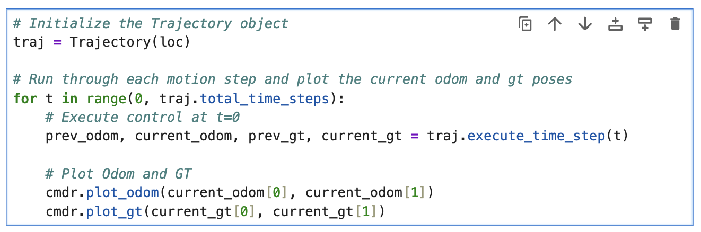
Video 3. Robot executing the collision-free trajectory. Odometry drifts away from ground truth over time.
Observation Data
Observation data zt is collected by running
loc.get_observation_data(), which executes a 360° rotation in place
to collect 18 range measurements at equidistant angular intervals. The first reading
is taken at the robot's current heading. Readings are stored in
loc.obs_range_data.
Video 4. Robot performing the 360° observation loop to collect 18 range measurements.
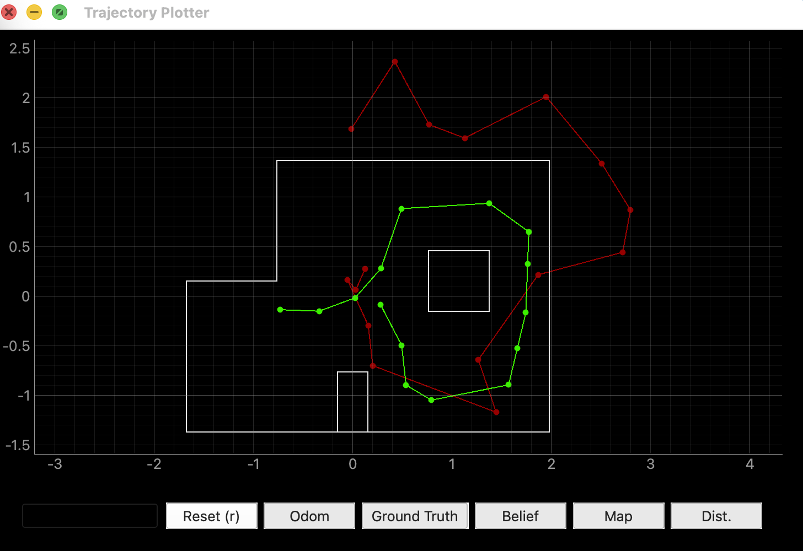
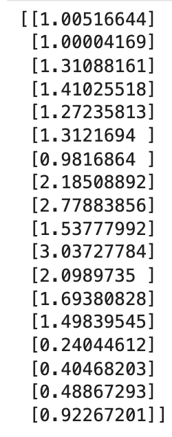
Localization Results
The full localization loop runs the Bayes filter at each trajectory time step: execute motion → prediction step → collect observations → update step. An initial update step is performed before the first motion to seed the belief from a uniform distribution.
Video 5. Best localization run. The blue belief plot closely follows the green ground truth across the entire trajectory.
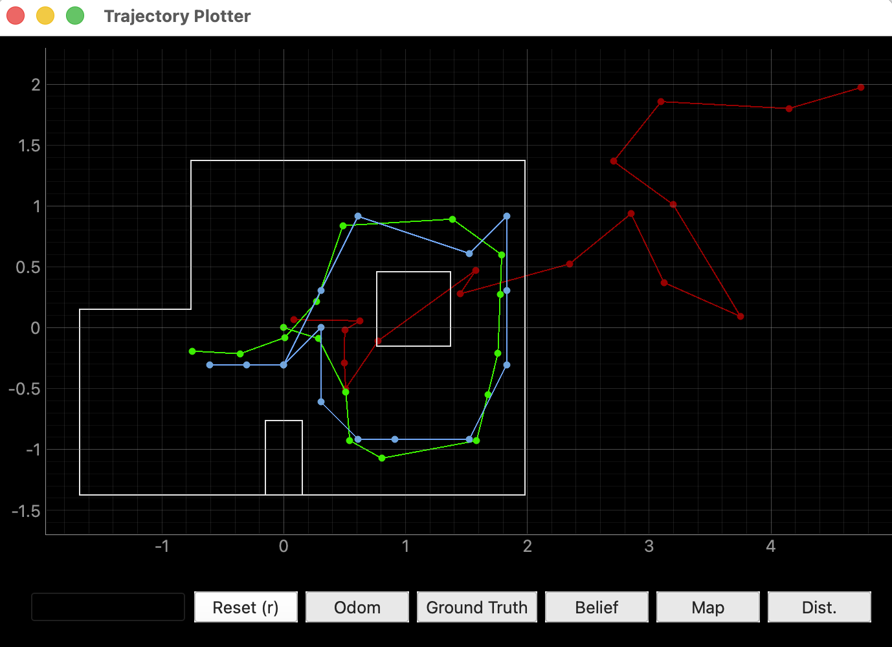
Most Probable State Per Iteration
| t | Belief (x, y, θ) | GT (x, y, θ) | XY Error | Prob |
|---|---|---|---|---|
| 0 | (0.305, 0.000, −50°) | (0.286, −0.090, 320°) | 0.09 m | 1.0 |
| 1 | (0.305, −0.610, −70°) | (0.510, −0.528, ~17°) | 0.22 m | 1.0 |
| 2 | (0.305, −0.610, −90°) | (0.510, −0.528, ~34°) | 0.21 m | 1.0 |
| 3 | (0.610, −0.914, −90°) | (0.542, −0.927, ~34°) | 0.07 m | 1.0 |
| 4 | (0.914, −0.914, 10°) | (0.804, −1.073, ~39°) | 0.19 m | 1.0 |
| 5 | (1.524, −0.914, 50°) | (1.584, −0.928, ~47°) | 0.06 m | 1.0 |
| 6 | (1.524, −0.914, 70°) | (1.675, −0.552, ~56°) | 0.38 m | 1.0 |
| 7 | (1.829, −0.305, 90°) | (1.758, −0.208, ~82°) | 0.12 m | 1.0 |
| 8 | (1.829, 0.305, 110°) | (1.777, 0.275, ~105°) | 0.05 m | 0.819 |
| 9 | (1.829, 0.914, 150°) | (1.789, 0.599, ~144°) | 0.32 m | 1.0 |
| 10 | (1.524, 0.610, 150°) | (1.384, 0.892, ~135°) | 0.31 m | ~1.0 |
| 11 | (0.610, 0.914, −110°) | (0.486, 0.839, ~150°) | 0.14 m | ~1.0 |
| 12 | (0.305, 0.305, −70°) | (0.270, 0.214, ~136°) | 0.10 m | 1.0 |
| 13 | (0.000, −0.305, −130°) | (0.010, −0.081, ~108°) | 0.22 m | 1.0 |
| 14 | (−0.305, −0.305, −150°) | (−0.360, −0.214, ~100°) | 0.11 m | 1.0 |
| 15 | (−0.610, −0.305, −170°) | (−0.753, −0.192, ~82°) | 0.16 m | 0.653 |
bel_bar probability at most indices is
extremely small (e.g., 1e−29), so after the update multiplication only one cell
survives with non-zero probability and normalizes to exactly 1.0. Timesteps where
probability is genuinely below 1.0 (t = 8: 0.819, t = 15: 0.653) are more
representative — the belief is spread across multiple plausible cells in
geometrically ambiguous areas.
Inference
When it works well
Timesteps t = 3, 4, 5, 7, 8, 11, 12, and 14 all achieve XY error under 0.15 m with probability at or near 1.0. These correspond to positions near walls, corners, or the box obstacle — geometrically distinctive locations where the 18-ray scan pattern is unique enough to strongly rule out incorrect cells. The best results are t = 5 (error 0.06 m) and t = 3 (error 0.07 m), both near the bottom-right corner of the map where the robot is enclosed by two walls.
The filter also shows strong early convergence: starting from a completely uniform prior, the very first update step (before any motion) converges to within one grid cell of the true pose at probability 0.9984. This demonstrates the power of the sensor model — 18 directional range readings at the origin uniquely fingerprint that location in the map.
When it works poorly
Timesteps t = 6, 9, and 10 show XY errors of 0.3–0.4 m. These correspond to the top-right portion of the trajectory, where the robot moves along a wall in a more open area. The sensor readings are less geometrically unique — multiple grid cells produce similar 18-ray scan patterns — so the belief snaps to an incorrect cell. At t = 9, the belief places the robot at y = 0.914 when the true position is y = 0.599, a 0.315 m error (approximately one grid cell).
Even in the best case, the 0.3048 m positional resolution and 20° angular resolution of the grid introduce an irreducible quantization error — the belief can only land on cell centers, not the exact continuous pose. The Bayes filter cannot exceed the precision of the grid it operates on.
Summary
References
- Lab 10 Instructions — Fast Robots @ Cornell
- Jeffery Cai's Lab 10 Report (referenced for how Jeffery approach this task)
- Grammarly writing assistance is used to fix my report's grammar and sentence flow.